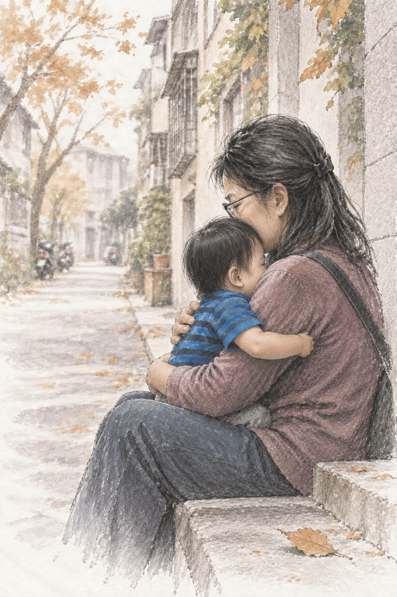

THE STORY THAT SHOULD HAVE BEEN HEARD
她不是要求更多資源
公開報導與庭審材料所呈現的周保母，曾長時間照顧剴剴；相關報導也記載，她願意繼續照顧孩子，陪他等待被領養。她所希望的，是孩子能在熟悉、穩定與被疼愛的環境裡長大。
幼兒不只是被安排到某一個「合格」的照顧位置。熟悉的照顧者、可預期的日常、對需求持續而細緻的回應，都是安全感得以形成的重要條件。
如果當時每一個可能的照顧選項，都被更慎重地評估；如果孩子的安全、穩定與需求，始終被放在第一位——結局會不會不一樣？
制度必須留下可以檢驗的答案
孩子的熟悉關係
是否評估過孩子與原照顧者的依附、日常適應與轉換風險？
可用的照顧選項
是否清楚告知續顧、費用協助與資格申請的可能性與限制？
決定如何作成
誰比較不同安排？比較基準、排除理由與回覆是否留下可稽核紀錄？
這些追問，不是在事後改寫結果，也不是宣稱只要續顧就必然改變悲劇；而是要求兒少保護系統在作出重大照顧轉換前，能將兒童最佳利益轉化為具體、可被檢視的決策。

記得剴剴，是為了不再漏接
世間最痛苦的，莫過於生離，最後竟成了死別。我們記得剴剴，不是為了停留在悲傷，而是要讓每一個等待被保護的孩子，都不要再遭到漏接，墜入悲慘的命運。